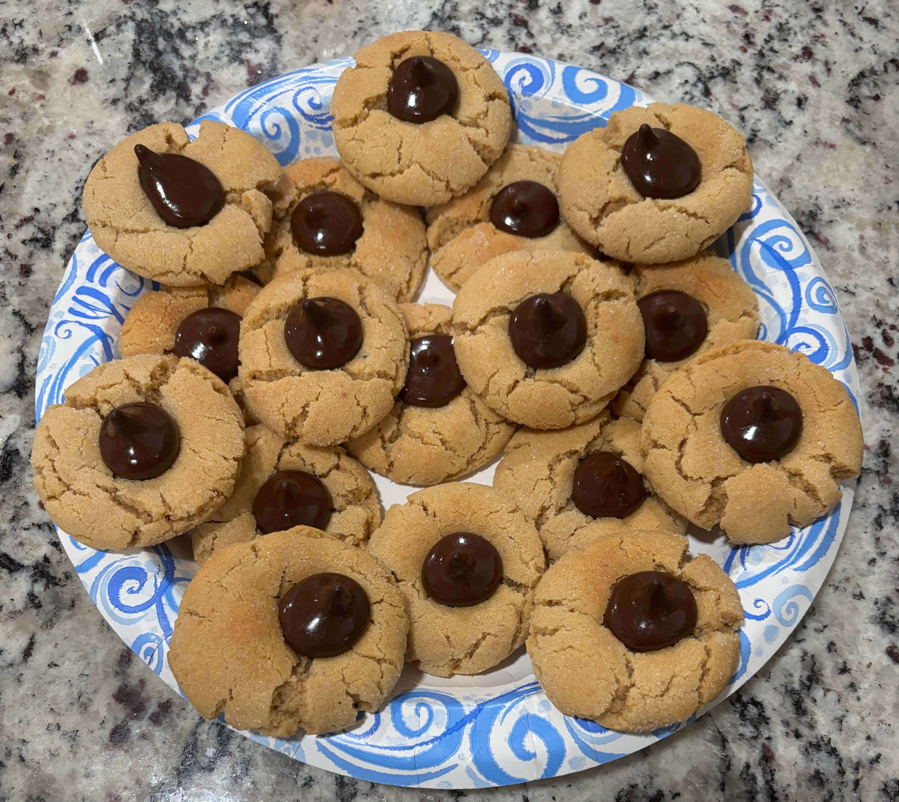

Home
Peanut Butter Blossom Cookies

36 cookies
Ingredients
- 1/2 cup granulated sugar
- 1/2 cup packed brown sugar
- 1/2 cup creamy peanut butter
- 1/2 cup salted butter, softened
- 1 large egg
- 1 1/2 cups All Purpose Flour
- 3/4 teaspoon baking soda
- 1/2 teaspoon baking powder
- Additional granulated sugar
- About 36 chocolate kisses, unwrapped
Steps
- Heat oven to 375°F
- In large bowl, beat 1/2 cup granulated sugar, the brown sugar, peanut butter, the butter and egg with electric mixer on medium speed, or mix with spoon, until well blended. Stir in flour, baking soda and baking powder until thoroughly blended and dough forms.
- Shape dough into 1-inch balls; roll in additional granulated sugar. Place on ungreased cookie sheets, about 2 inches apart.
- Bake one cookie sheet at a time for 8 to 10 minutes or until edges are light golden brown. Remove from oven and immediately press 1 milk chocolate candy in center of each cookie. Remove from cookie sheet to cooling rack. Repeat with additional cookie sheets.
- Cool cookies until chocolate candies are set up, about 1 hour. Store in an air tight container in a single layer between sheets of waxed paper.